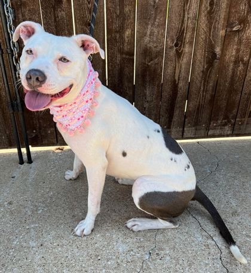
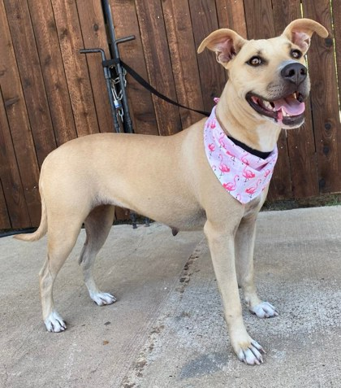
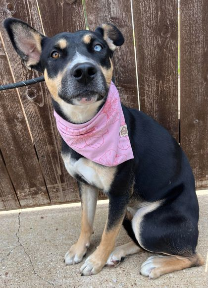
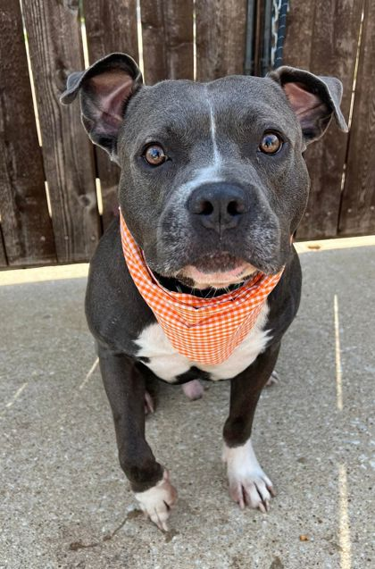
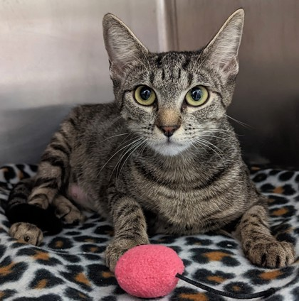
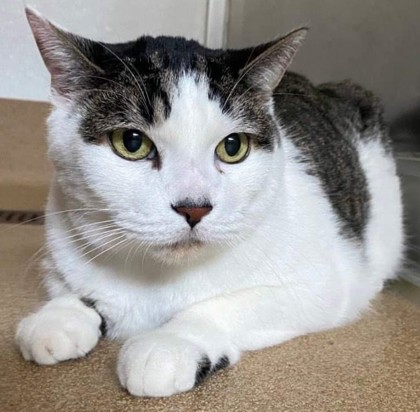

|

Hi there, my name is Angel. I spent over
eight months at another shelter, so the nice people here agreed to
take me and give me a chance at finding my forever home. I am a
sweet girl with people and have lived with children before. I walk
very well on the leash and enjoy being outdoors, soaking up the
sunshine and fresh air. One of my favorite things is to play
fetch, ill throw a ball with you all day long if you'd let me. One
way to my heart is through food, you can use treats to train me to
be the perfect lady. The only thing that I'm not a fan of is other
animals. I would prefer to be the only dog in the home, I just
want to be the apple of your eye and not have to share the
attention with anyone else. On occasion, I have been known to be
okay with submissive female dogs, but it's best that I will just
be the only pet in your home to keep everyone happy. I promise
that if you give me some time, you will realize why all you need
is me. If you think you can provide me with the home I deserve,
don't hesitate to call today.
|
|

Hi, my name is Nala. I was surrendered with
my puppy but now it's time for me to branch out and find a home of
my own, somewhere where I can be someone's whole world. I am very
affectionate and love to cuddle, you'll find that out pretty soon
when I jump up in bed with you for a mid-day nap! I am very smart
and eager to learn all sorts of cool tricks. I can sit on command,
but I really love to show off how smart I am by giving you my paw,
ill give you my paw over and over until you take it and tell me
I'm a good girl. I am highly treat motivated so you can teach me
all sorts of tricks with a few tasty snacks! I get along with
other dogs but a meet and greet is recommended if you have another
dog in the home. I am very well-mannered when I walk on the leash
and enjoy going outdoors for walks to enjoy the fresh air and
sunshine. If you are interested in meeting me, then give the
shelter a call today.
|
|

My name is Road Runner. There is a whole
story behind my name. If you haven't had a chance to hear my story
then look on Facebook, I'm a celebrity there! Long story short I
was dumped at the shelter, and I was so scared that I ran for
days. Once I was finally in the custody of the nice people here I
was very fearful and did not know how to act like a dog. I have
begun to trust the people here but will need time to warm up to
new people. I am now available for adoption, but there are several
requirements that my future family will have to meet in order to
take me home: a sturdy/secure fence, no small children, a yard to
play in, and a dog companion to keep me company. When I was
introduced to another dog here, I became the happiest I've ever
been. Because of this, I must be in a home with another dog so I'm
not alone when you are away. I am still a bit of a flight risk and
so my new home must have a very secure yard so I don't have any
opportunity to escape because if I get out, I will run. The people
here have gotten very attached to me, but they know my perfect
home is out there. They will be picky with who I go home to, in
order to make sure it's the right fit. If you are interested in
adopting me and meet the requirements then give the shelter a call
today.
|
|

Hi, my name is Handsome. It's a name that
fits me perfectly! Not only am I absolutely adorable, but I've got
a pretty sweet personality too. I'm very affectionate and can
often be found snuggling with my person on the couch or in bed...it
doesn't matter to me! I'm also an active guy who likes to play
fetch, and I will show you how fast I can run when I get the
zoomies! I must be the only dog in the home as I can be very
territorial of my space, there is no exceptions to this rule, but
I will be the bestest boy for the right family. I promise you'll
have so much fun with me that you won't mind. I am well-mannered!
I know how to sit on command, and I walk very well on leash. One
last thing you need to know about me, the way to my heart is with
treats, 100%! If you'd like to meet me, give the shelter a call
today, I'll be patiently waiting!
|
|

Hi, my name is Alicie. I'm a cute little thing! Don't let my
sometimes "grumpy" face fool you, I'm petite and sweet! You can
see that I have inherited some Oriental Shorthair breed features,
but I didn't get the loud and talkative gene. Most of the time you
can hardly hear my precious little meow as I talk, but I will talk
to you softly now and again. I'm very
gentle-natured and love getting attention more and more as I get
comfy, so it won't take long for me to settle in! My favorite
place is on the furniture, so put soft blankets down for me and
maybe a nice bed on the floor. We will also need a cat tree,
because I do like to climb to sit up high quite often too! I am
okay with cats around if they keep their distance from me, because
I tend to be a bit of a loner around them. I'm nice and will only
hiss to keep them away, if they get too close. I LIKE NOT BEING
THE ONLY CAT though, and having good-natured cat company nearby. I'm just
learning about playing and having fun with them. I really like to play with the wand toy. Let's start
playing with that together, and both have fun!
|
|

Hi, my name is Tyson. I'm a very gentle, big, soft hearted boy, just as
sweet as I can be! I'm shy when we meet, but I come alive when you
pet me, and the more you pay attention to me, the more relaxed I
feel! I feel safe
snuggled up, or hiding under, my favorite squishy blankets.
Sometimes I might be up high, or burrowing into tight spaces for
comfort at first, as I did here. I like to climb sometimes and
sit up high a lot. Look for a big STURDY cat tree with EXTRA LARGE
platforms to lay on. Once I'm settled, I'm a very friendly guy
that loves to be around people and can't get enough cuddling or
pets, ever! I don't mind if you want to pick me up and hold me.
Hugs are nice and I'm a huge LOVE-BUG! DO NEED
TO BE IN A FAIRLY QUIET HOME. Too much activity and noise will be
more than I can deal with. Other pets are okay. We had another
SWEET CAT ROOMMATE before, just give me some elbow-room! GENTLE,
QUIET DOGS ARE OKAY too! Our first person said that I make a perfect
emotional support animal, because I am so very sweet!
|